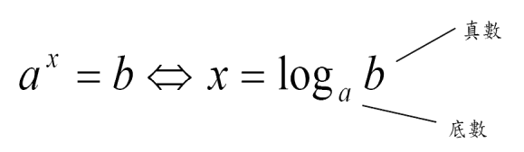
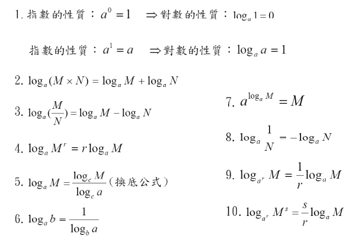
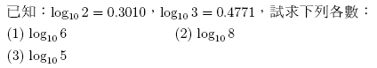
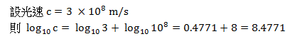
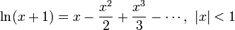
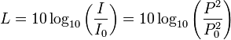
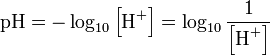

對數(Logarithm)，是數學上一個非常好用的工具。在沒有計算機的時代，對數及對數表使繁複的計算成為可能，它能幫助我們化簡極大的數字，將之轉換為人類能理解的數量級，也可以幫助我們計算極大次方之值。現代主要應用於地震規模，酸鹼值，分貝等測定及運算。
若 a > 0，a 不為1，b > 0，且a,b滿足 a 的 x 次方等於 b，則可記為


以上總共列出10個對數性質與公式，但讀者並不必記憶全部的公式，只要注意

上列例題中，我們可利用log化乘為加的性質，將題目給定的兩個對數相加，相加過程中不必裡會底數(10)，只要專注於 2 x 3 = 6 即可，如此一來，我們便順利得到 log 6 (以10為底)

上述範例中，3 x 10 的 8 次方被分開成兩個 log，後者的次方 8 被提到 log 前面，而 log10 剛好為 1，又查表得知 log3 = 0.4771，故 log(c) 取對數後可記為 8.4771。
雖然有些對數較為簡易，可以手算完成，但複雜一點的對數可能就要交給電腦了。麻煩的是，電腦只會算自然對數 (以 e = 2.71828 為底的對數，原因會在下面討論)，所以這時便要使用換底公式，將欲求的對數轉為自然對數後，交給電腦計算。
註: ln 為自然對數的簡寫( Natural log )
至於電腦計算ln()的方法，則是利用泰勒展開式處理，由於其具有規律性，可以方便的用程式語言描述。


L是分貝數值
I為量度的密度，I(0)為「特定參考密度」，人耳的起始可聽「密度」為10^(-12) W/m^2
P為量度的壓力，P(0)為「特定參考壓力」，人耳的始聽壓力為10^(-5) N/m^2

PH值在化學中，代表該溶液的氫離子濃度 [H+]，若 [H+] = 10^(-3)，則PH = 3
影片來自 KhanAcademy，更多對數相關影片